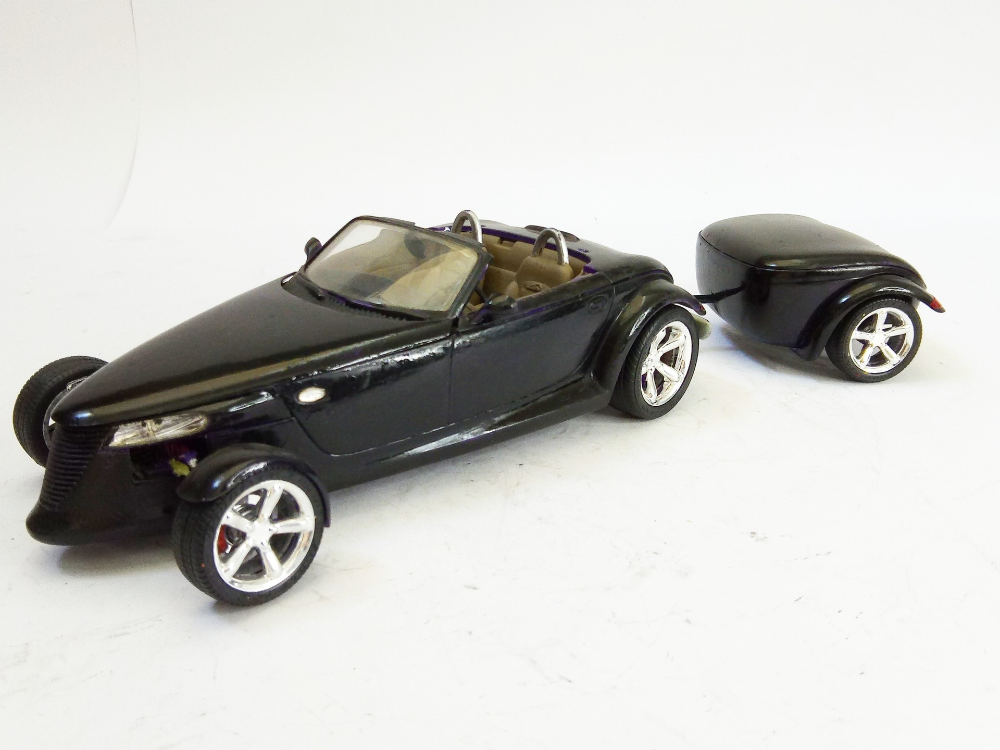
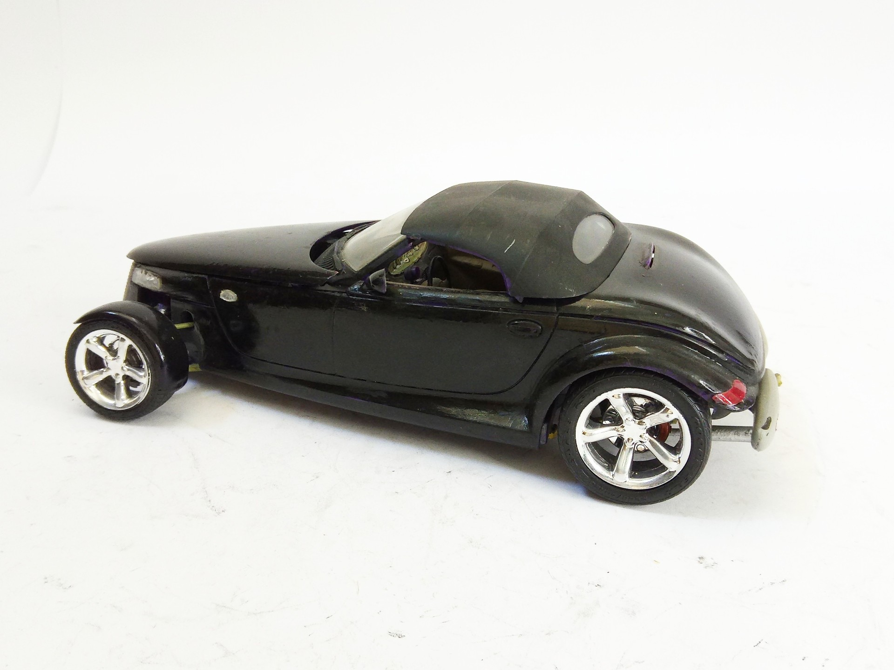
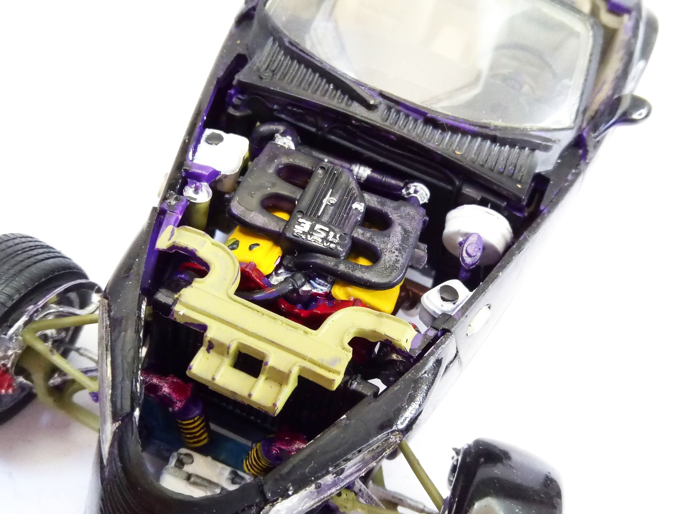
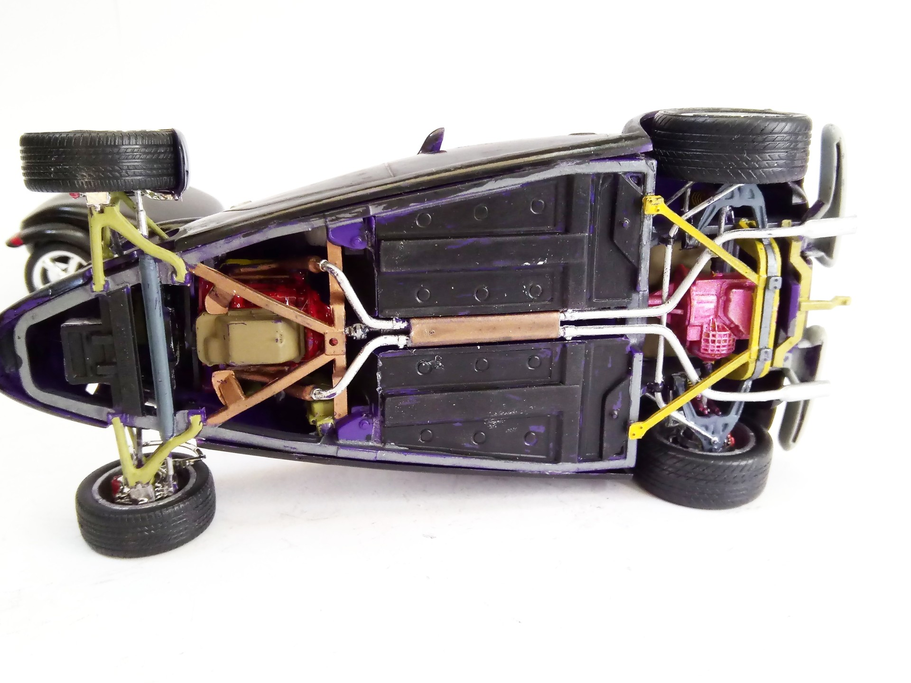
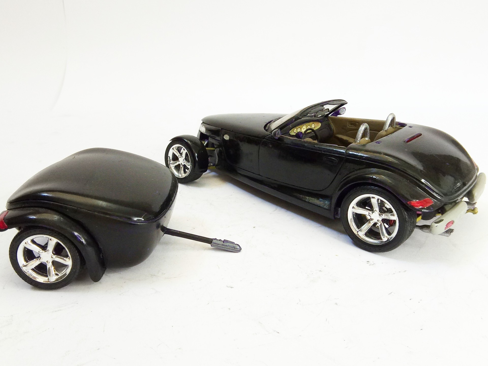

Auto e veicoli stradali · scale model archive
Plymouth Prowler
Plymouth Prowler — Kit: Revell, Scale: 1724. It is stunning that this car was actually series produced and on sale, what a ride #1/24 #Revell

Photo gallery




English description
It is stunning that this car was actually series produced and on sale, what a ride
#1/24 #Revell
Descrizione italiana
È sorprendente che questa auto sia stata davvero prodotta in serie e venduta: che macchina.